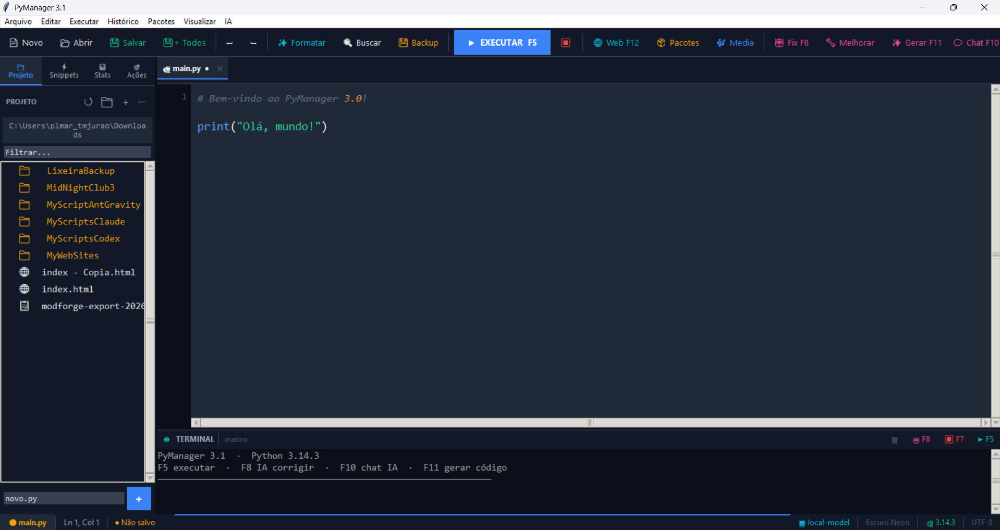
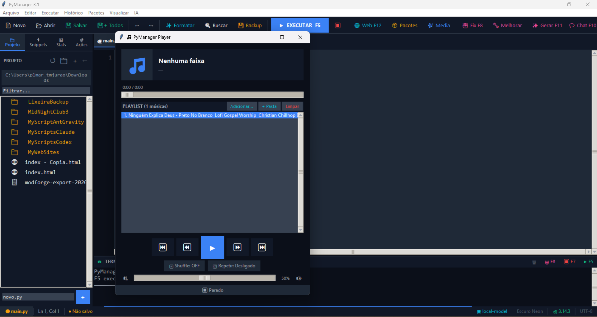
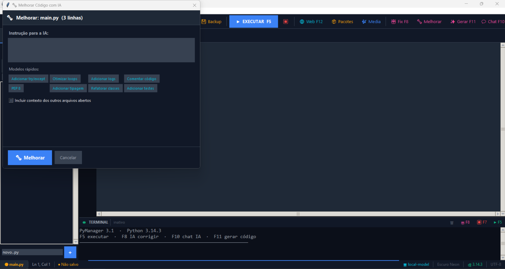
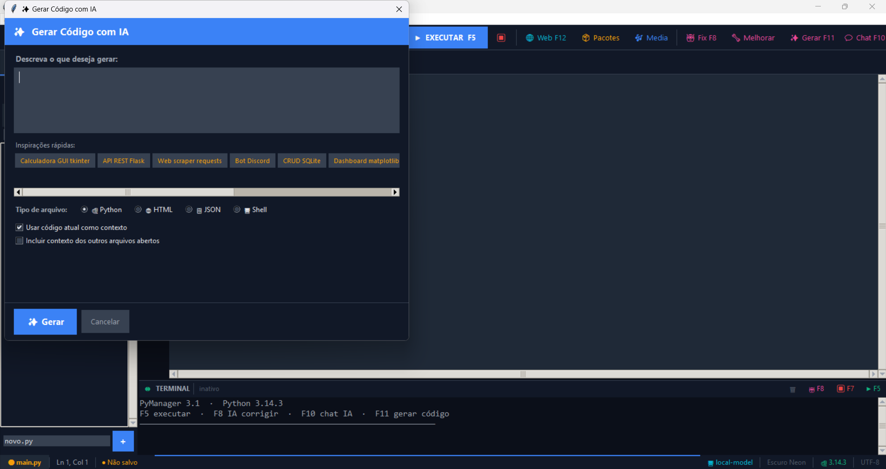
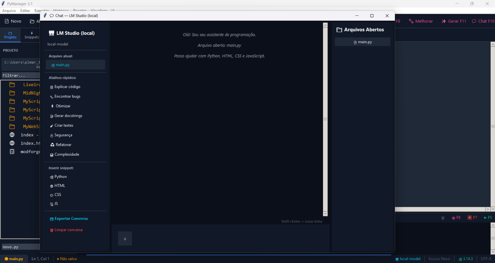
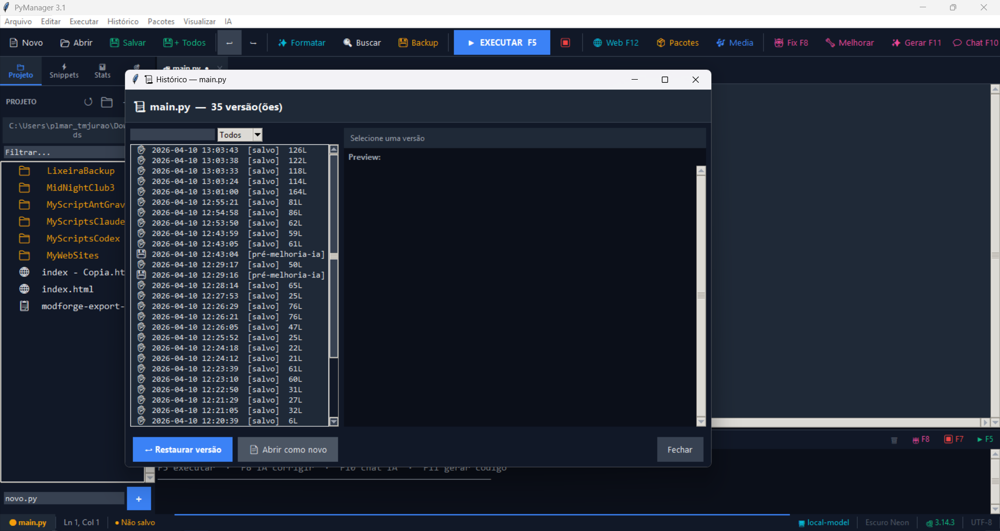
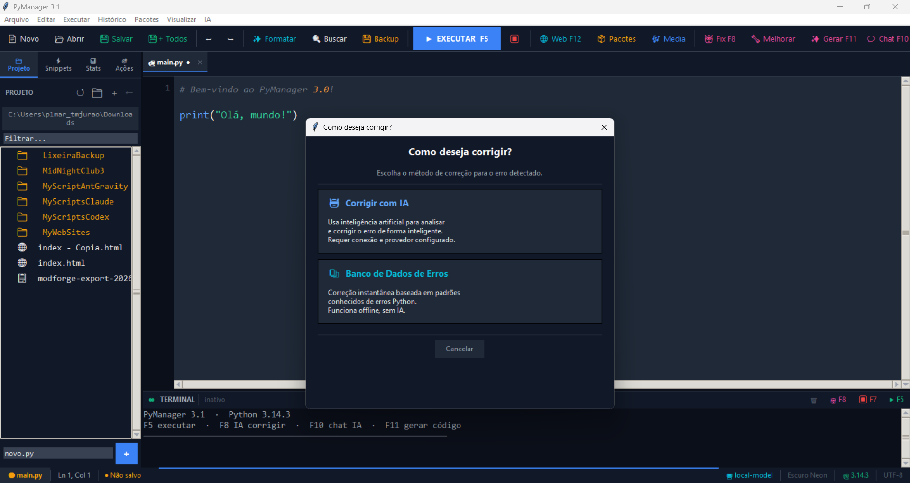
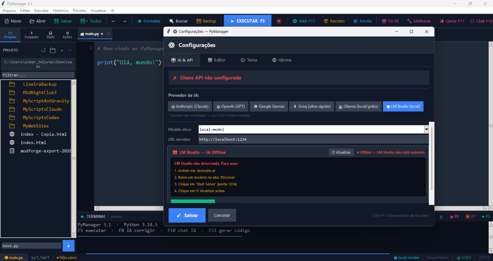

IDE Python leve com IA nativa. Escreva, teste e versione sem sair do editor.
PyManager é um IDE completo para Python desenvolvido em Tkinter com integração nativa de Inteligência Artificial.
Alternativa leve e rápida ao PyCharm / VS Code. Totalmente em português brasileiro, com ~6.200 linhas de código em um único arquivo principal + biblioteca interna.
Suporta 6 provedores de IA (Claude, GPT, Gemini, Groq, Ollama e LM Studio) e roda offline com modelos locais.








6 provedores • Streaming token-a-token • Fallback automático • IA local (Ollama/LM Studio)
| Provedor | Modelos | Gratuito? | Local? |
|---|---|---|---|
| Anthropic (Claude) | claude-sonnet-4, haiku-4, opus-4 | Não | Não |
| OpenAI (GPT) | gpt-4o, gpt-4o-mini, gpt-4-turbo | Não | Não |
| Google Gemini | gemini-2.0-flash, 1.5-flash, 2.5-pro | Sim | Não |
| Groq | llama-3.3-70b, gemma2-9b... | Sim | Não |
| Ollama | llama3.2, codellama, phi3... | Sim | Sim |
| LM Studio | Qualquer modelo instalado | Sim | Sim |
Corrige erros automaticamente com diff
Análise de performance e boas práticas
Chat completo com histórico
Gera código a partir de texto natural
Executar arquivo completo
Executar seleção
Versionamento automático • 50 versões • Diff visual • Restaurar com um clique
Gerenciador gráfico de pacotes • Instalar/atualizar sem terminal